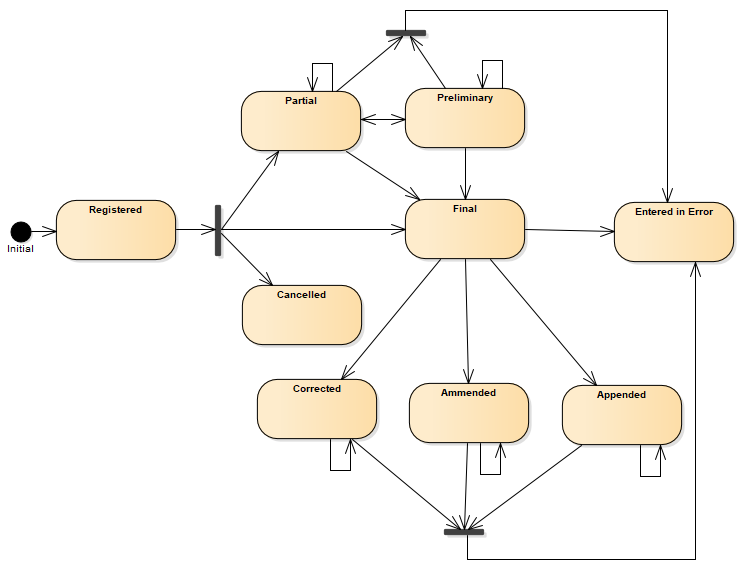

CH LAB-Report (R4)
0.1.1 - draft

CH LAB-Report (R4)
0.1.1 - draft

This page is part of the CH LAB-Report (R4) (v0.1.1: DSTU 1 Draft) based on FHIR (HL7® FHIR® Standard) R4. This is the current published version. For a full list of available versions, see the Directory of published versions

Fig. 1: Resource Overview
The DiagnosticReport status decides the Use Case. ValueSet URL

Fig. 2: DiagnosticReport state machine diagram
A Laboratory, after performing its internal testing workflow, forms a complete result report, according to the requirements and query parameters formulated by the ordering entity. Internal testing workflow includes consolidation of all test result orders or order groups and all steps of data quality assurance and validation. Then, depending on its internal organization, may inform the application of the clinical practice (known as Order Result Tracker), send the report to the intended recipients included in the Laboratory test order; store a report copy in an EHR-system; etc. In this case:
In some cases, a laboratory might release a laboratory report which is either incomplete (not all results are available or marked as “final”) or unverified. This usually occurs when some of the results are known to be produced later, but others need to be communicated to report recipients due to specific organizational and/or process rules; or because of the urgency of some results. Note: the ‘delay’ in the results availability may be due to the nature of the test, or to organizational or technical reasons. In such cases:
As described in the example 1-tvt the practitioner Marc Mustermann may request further request for coagulation tests from the same sample of citrate tubes after having received the confirmation of a deep vein thrombose. After the fullfillment of these request the laboratory may send an additional laboratory report. Subsequent to being final, the report will be modified by adding new content. The existing content is unchanged.
The report is unavailable because the measurement was not started or not completed (also sometimes called “aborted”).